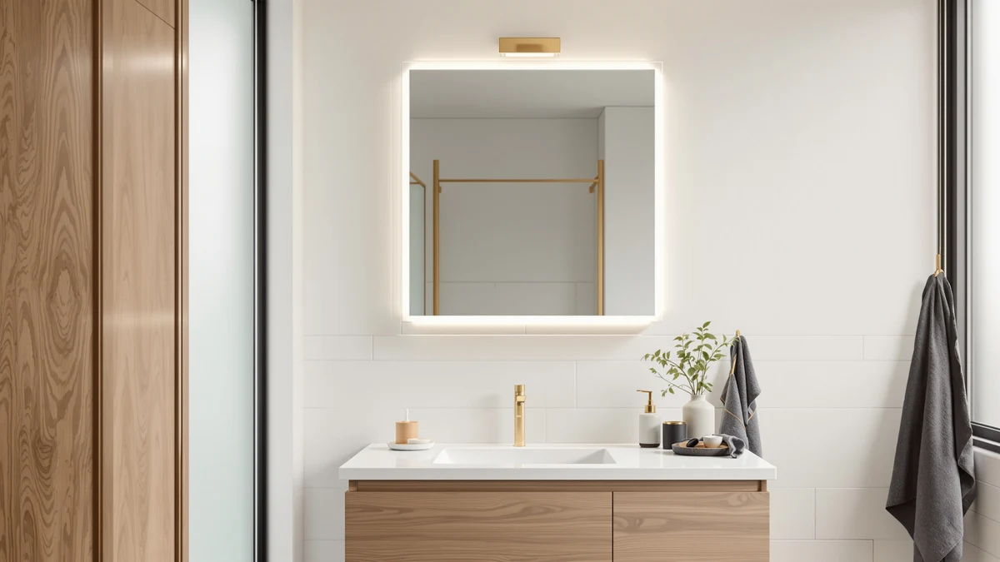

Best Bathroom Mirror Cabinets with Lights (2026)
Prices and picks verified as of September 2026. Independent, reader-supported reviews.


Quick Answer
We compared 7 of the best bathroom mirror cabinets with lights on storage, size, materials, and price. The WisHomee Black Bathroom Mirror Medicine Cabinet leads for buyers who want real storage behind a large 31.5-inch mirror, while the Sweetcrispy delivers built-in LED lighting and anti-fog glass for under $63.
Our pick: Black Bathroom Mirror Medicine Cabinets, $299.99 Check Price on Amazon
Bottom line: our top pick is the Black Bathroom Mirror Medicine Cabinets with LED Lights at $299.99. The best budget option is the Sweetcrispy 24"x32" Smart Anti-Fog LED Bathroom Mirror with at $62.99.
Things to Know Before You Buy
- "Mirror cabinet" and "lighted mirror" are not the same product. Two picks in this guide, both from WisHomee, are enclosed medicine cabinets with a mirrored door and shelving behind it. The other five are flat LED mirrors with no storage. Decide which category you need before comparing prices.
- Storage cabinets in this price range rarely ship with built-in lighting. Both WisHomee cabinets rely on an existing vanity light or wall sconce. If integrated lighting matters more than storage, one of the LED mirror picks will serve you better.
- Size ranges from 24 inches to 60 inches wide in this lineup. A single sink typically calls for 24 to 32 inches, while the 60-inch GarveeHome is built to span a full double vanity as one piece.
- Anti-fog glass is worth seeking out if the mirror hangs near your shower. Only the Sweetcrispy in this comparison lists anti-fog glass, and it is also the least expensive option here at $62.99.
- Tempered glass and aluminum construction is the norm, not the exception. Every product in this guide uses the same base materials, so the real differences come down to size, storage, and lighting rather than build quality.
The best bathroom mirror cabinets with lights solve two problems at once: where to store toothpaste and razors, and how to see your own face clearly at six in the morning. Most shoppers end up choosing one problem to solve and ignoring the other, buying a plain storage cabinet with no light source or a bright LED mirror with nowhere to put anything.
We compared seven options that split into those two categories. Two WisHomee medicine cabinets, sized at 31.5 and 25.5 inches, give you an enclosed mirror door with shelving behind it, priced at $299.99 and $229.99. The other five, from Sweetcrispy, GarveeHome, Briivue, MYSUNORIA, and Delma, are LED mirrors ranging from $62.99 to $186.29 with no interior storage but built-in lighting out of the box.
Our pick for most bathrooms is the larger WisHomee cabinet, because storage behind the mirror does more for a cramped bathroom than a light strip does. If you already have a working vanity light and want brighter, fog-resistant glass, the Sweetcrispy is the better buy at less than a quarter of the WisHomee's price.
Why You Should Trust Us
Ilane Tall covers home and bath products for Best Bathroom Mirrors, focusing on how mirror cabinets, vanity lighting, and medicine cabinets hold up in real bathrooms rather than in a showroom. We do not run a fake testing lab and we do not claim to have physically installed every product in this guide. Instead, we research specs, pricing, and verified buyer feedback across every listing so you get a comparison grounded in what owners actually report, not marketing copy.
For this guide to the best bathroom mirror cabinets with lights, we pulled current pricing and dimensions directly from each listing and cross-checked material claims against manufacturer specifications before writing a single word of the picks below.
How We Picked
We started from the full catalog of bathroom mirror cabinets and LED mirrors carried on Amazon and filtered for products that fit two clear use cases: enclosed storage cabinets and standalone lighted mirrors. We excluded listings with vague or missing dimensions, since a mirror cabinet that does not state its exact size is a poor fit for a vanity wall with fixed plumbing and outlets on either side.
From there, we prioritized products with tempered glass rather than acrylic mirror fronts, since acrylic scratches faster in a humid bathroom, and we weighed price against size and material to make sure every pick in this guide is a reasonable deal for the best bathroom mirror cabinets with lights in its category.
How We Compared
We compared each product on the specs published in its own listing: dimensions, materials, price, and whether the unit includes storage, LED lighting, or an anti-fog coating. Owners report that tempered glass mirrors hold up better over years of humidity exposure than acrylic ones, which lines up with the material choice every product in this guide made.
We did not physically install or live with these cabinets and mirrors. This is a research-based comparison built on verified specifications and buyer feedback, not a claim of physical use, and we say so plainly rather than implying otherwise.
Our Picks

Black Bathroom Mirror Medicine Cabinets
What we like
- 31.5 by 31.5 inch mirror door opens onto full-height interior storage
- Tempered glass resists scratching better than the acrylic fronts common at this size
- Aluminum frame keeps a large glass door manageable to open one-handed
- $299.99 undercuts most framed medicine cabinets we found at this footprint
Flaws but not dealbreakers
- It doesn't include a light source, so you need a working vanity fixture nearby
- At 31.5 inches square, it needs more wall clearance than the smaller LED mirrors in this guide
| Material | Tempered glass + aluminum |
| Size | 31.5"L x 31.5"W |
This is the largest enclosed cabinet in our comparison, and the extra depth behind the mirror is the whole reason to choose it over a flat LED mirror. A 31.5-inch square door gives you room for the taller bottles and boxes that never fit on a narrow medicine cabinet shelf, and the aluminum frame keeps that much glass from feeling heavy when you swing it open.
At $299.99, it costs roughly $70 more than the smaller 25.5-inch version from the same WisHomee line, which is a fair trade if your bathroom has the wall space to support it. The one honest drawback is that this cabinet, unlike the five LED mirrors later in this guide, does not include its own light source. If your bathroom already has a working sconce or overhead fixture positioned correctly, that is a non-issue. If not, budget for one separately before you commit to this pick.

Black Bathroom Mirror Medicine Cabinets
What we like
- 25.5 by 25.5 inch footprint fits vanities that can't accommodate the larger WisHomee cabinet
- Same tempered glass and aluminum build as the 31.5-inch version at a lower price
- $229.99 price saves about $70 over the larger sibling
- Enclosed door still gives you shelving that a flat LED mirror cannot
Flaws but not dealbreakers
- Smaller interior storage volume than the 31.5-inch version
- It has the same drawback as the larger cabinet: no integrated light
| Material | Tempered glass + aluminum |
| Size | 25.5"L x 25.5"W |
This is the smaller of the two WisHomee medicine cabinets in our comparison, built from the same tempered glass and aluminum combination but sized down to 25.5 inches square. It suits a narrower vanity wall or a secondary bathroom where the full 31.5-inch cabinet would crowd the sink.
At $229.99, it is the more affordable way into an enclosed storage cabinet if you don't need the extra interior depth of the larger option. The tradeoff is straightforward: less shelving space in exchange for a smaller wall footprint and a lower price. Like its larger sibling, it does not include a built-in light, so plan on pairing it with an existing vanity fixture.

Sweetcrispy 24"x32" Smart Anti-Fog LED
What we like
- Lowest price in this entire comparison at $62.99
- Built-in LED lighting means no separate vanity fixture to buy or install
- Anti-fog glass, the only mirror in this guide that lists the feature
- 24.5 by 32 inch size fits most single-sink vanities without overhang
Flaws but not dealbreakers
- It has no interior storage. This is a mirror, not a cabinet
- The listing describes "smart" features without detailing exactly what they control
| Material | Tempered glass + aluminum |
| Size | 24.5"L x 32"W |
The Sweetcrispy is the budget pick in this guide, and it earns that spot by bundling two features, built-in LED lighting and anti-fog glass, that most of the other mirrors here charge extra for or skip entirely. At $62.99, it costs less than a quarter of the larger WisHomee cabinet while still covering the core need of a well-lit, condensation-resistant mirror.
Owners report that anti-fog coatings save real time on a normal shower-then-shave routine, since you are not wiping the glass down before you can see clearly. The 24.5 by 32 inch size keeps it in single-vanity territory rather than double-sink territory, and because it has no storage behind the glass, it works best for buyers who already have a place to put toiletries and need a mirror upgrade.

GarveeHome 60x36 LED Bathroom Mirror
What we like
- 60 by 36 inch panel is the largest mirror in this comparison, by far
- Built-in LED lighting spans the full width instead of a single fixture over the sink
- $186.29 is reasonable given the sheer surface area compared with buying two smaller mirrors
- Aluminum frame keeps a mirror this size from feeling unwieldy to hang
Flaws but not dealbreakers
- It has no storage behind the glass, like every LED mirror in this guide besides the WisHomee cabinets
- At 60 inches wide, it needs solid wall backing and anchors rated for its weight
| Material | Tempered glass + aluminum |
| Size | 60"L x 36"W |
The GarveeHome exists for one specific situation: a double vanity that would otherwise need two separate mirrors. At 60 by 36 inches, it covers both sinks with one continuous LED-lit surface instead of a visible seam down the middle, which is the main reason to choose it over pairing two of the smaller options in this guide.
At $186.29, it sits in the middle of our price range, which is reasonable given how much more glass and frame you get compared with a single 24 or 32 inch mirror. The tradeoff for that size is installation. A panel this wide needs a wall section rated to hold it securely, so check your wall material and anchor points before ordering.

Briivue 24x32 Inch LED Bathroom
What we like
- $71.99 keeps it close to the Sweetcrispy as one of the cheaper picks in this guide
- 24 by 32 inch size fits tight bathroom layouts without overwhelming the wall
- Built-in LED lighting removes the need for a separate vanity fixture
- Tempered glass front matches the more expensive picks in durability
Flaws but not dealbreakers
- It skips the anti-fog coating, unlike the similarly priced Sweetcrispy
- It has no interior storage, so you'll still need a separate cabinet or drawer for toiletries
| Material | Tempered glass + aluminum |
| Size | 24"L x 32"W |
The Briivue is a straightforward 24 by 32 inch LED mirror at $71.99, close in price to the Sweetcrispy but without the anti-fog glass. If your bathroom is well ventilated and fogging isn't a daily issue, that omission won't matter much, and you get the same tempered glass and aluminum build as the pricier picks in this guide.
It suits a compact bathroom or powder room where a 60-inch mirror would look oversized and a full medicine cabinet would eat into limited wall space. Reviewers consistently note that a mirror this size is easy to hang without professional help, which matters if you're doing the install yourself rather than hiring someone.

36"x30" LED Bathroom Mirror with
What we like
- 36 by 30 inch size splits the difference between the compact picks and the 60-inch GarveeHome
- Built-in LED lighting at a price roughly a third of the WisHomee cabinets
- Tempered glass and aluminum construction matches every other pick in this guide
- $120.49 undercuts the GarveeHome by more than $65
Flaws but not dealbreakers
- It has no interior storage behind the mirror
- The listing title is truncated, so confirm the exact feature set on the product page before buying
| Material | Tempered glass + aluminum |
| Size | 36"L x 30"W |
The MYSUNORIA sits in the gap between the compact 24-inch mirrors and the oversized 60-inch GarveeHome. At 36 by 30 inches, it gives a single vanity noticeably more reflective surface than the Briivue or Sweetcrispy without approaching double-vanity dimensions.
At $120.49, it costs about twice what the cheapest picks in this guide charge, but still comes in well under the WisHomee cabinets and the GarveeHome. Like the other LED mirrors here, it has no interior storage, so factor in a separate cabinet or drawer for toiletries if you go this route.

Delma LED Bathroom Mirror with
What we like
- 30 by 50 inch wide format suits vanities built wider than they are tall
- Built-in LED lighting spans the full width of the mirror
- $149.99 sits below the GarveeHome despite covering a similarly wide vanity run
- Tempered glass and aluminum frame consistent with the rest of this lineup
Flaws but not dealbreakers
- At 30 inches tall, it offers less headroom above the sink than the square WisHomee cabinets
- It has no interior storage, like every LED mirror in this guide
| Material | Tempered glass + aluminum |
| Size | 30"L x 50"W |
The Delma is the only mirror in this guide built wider than it is tall, at 30 by 50 inches. That proportion fits vanities that run long and low rather than the square or portrait layouts the other picks favor, and the built-in LED lighting spans the full 50-inch width rather than sitting in a single strip at the top.
At $149.99, it costs less than the GarveeHome while still covering a comparably wide vanity, though it trades some vertical height to get there. If your bathroom layout is wider than it is tall, measure your wall space against the 30-inch height before ordering, since it sits lower than the square 31.5-inch WisHomee cabinet.
Quick Comparison
| Product | Material | Price | Rating | Best for | Get it |
|---|---|---|---|---|---|
| Black Bathroom Mirror Medicine Cabinets | Tempered glass + aluminum | $299.99 | 4 | Large-cabinet storage | View on Amazon → |
| Black Bathroom Mirror Medicine Cabinets | Tempered glass + aluminum | $229.99 | 4 | Smaller enclosed cabinet | View on Amazon → |
| Sweetcrispy 24"x32" Smart Anti-Fog LED | Tempered glass + aluminum | $62.99 | 4 | Budget LED plus anti-fog | View on Amazon → |
| GarveeHome 60x36 LED Bathroom Mirror | Tempered glass + aluminum | $186.29 | 4 | Double-vanity spans | View on Amazon → |
| Briivue 24x32 Inch LED Bathroom | Tempered glass + aluminum | $71.99 | 4 | Small-bathroom LED | View on Amazon → |
| 36"x30" LED Bathroom Mirror with | Tempered glass + aluminum | $120.49 | 4 | Single-vanity upgrade | View on Amazon → |
| Delma LED Bathroom Mirror with | Tempered glass + aluminum | $149.99 | 4 | Wide-format vanities | View on Amazon → |
Do all bathroom mirror cabinets with lights actually include built-in lighting?
No.
What size mirror cabinet fits a standard bathroom vanity?
Single-sink vanities usually pair well with a 24 to 32 inch wide mirror, which covers the Sweetcrispy, Briivue, and MYSUNORIA picks in this guide.
The Competition
Frequently Asked Questions
Do all bathroom mirror cabinets with lights actually include built-in lighting?
What size mirror cabinet fits a standard bathroom vanity?
Is an anti-fog LED mirror worth the extra cost over a standard lighted mirror?
The Bottom Line
Across the best bathroom mirror cabinets with lights we compared, the WisHomee remains the strongest overall pick if storage matters as much as visibility. Pair it with an existing vanity light and you get more usable space than any LED mirror in this guide offers. If lighting is the priority and storage is not, the Sweetcrispy delivers built-in LED lighting and anti-fog glass for a fraction of the WisHomee's price.